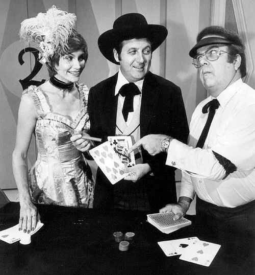
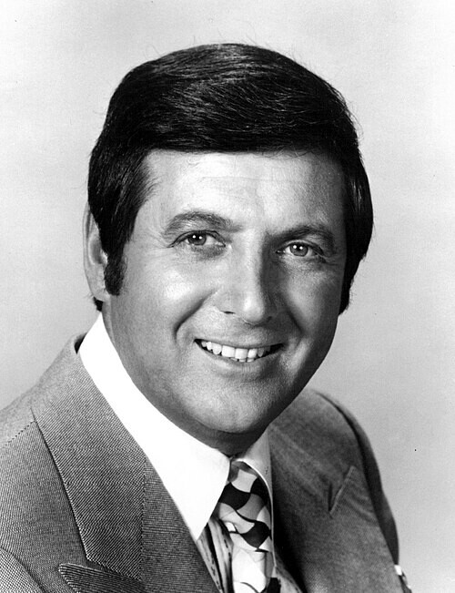

数学・論理
3つの扉、1台の車、2頭のヤギ。シンプルなクイズに、1000人近い博士号保持者が抗議の手紙を書いた。彼らの直感は間違っていた。
統計学者スティーブ・セルビンが学術誌で初めて定式化した年。
同年、ベトナム戦争が終結（サイゴン陥落）。マイクロソフト社が設立された。
1990年にParade誌で再び火がつき、アメリカ中を巻き込む大論争に発展した。
レストランで料理を注文したあと、隣のテーブルに別のメニューが運ばれてくる。「あっちにすればよかった」と思いながらも、変えない。変えたら負けた気がする。
就職先、賃貸物件、旅行のルート。私たちは毎日、最初の選択に引きずられながら生きている。一度決めたものを手放すことへの、あの説明しにくい抵抗感。
その抵抗感が、確率的には「損」をもたらしている場合がある。
人間の直感は、新しい情報が加わっても、最初の判断を手放せないことがある。この記事では、そのことをシンプルな選択の場面で体験する。
その名は「Let's Make a Deal」。NBCで放送が始まったこのゲームショーは、最盛期には全米トップクラスの視聴率を記録した。番組の仕掛けはユニークで、観客はスタジオに来るときに派手な仮装をしてくる。野菜の着ぐるみ、アニマル帽子、手作りのドレス——目立てば目立つほど、司会者に選ばれてステージに上がれるからだ。

「Let's Make a Deal」のスタジオ（1974年頃）。中央が司会のモンティ・ホール、左がモデルのキャロル・メリル、右がアナウンサーのジェイ・スチュワート。このステージから、のちに数学史に残る問題が生まれた。
司会を務めたのが、カナダ出身のモンティ・ホールだ。本名モンテ・ハルペリン。温かみのある語り口と、観客を乗せる天性の才能で、30年近くにわたってこの番組に君臨した。彼の名前を冠した「モンティ・ホール問題」が、のちに数学史に残る論争を引き起こすことになる。
ゲームの構造はこうだ。ステージに3つの扉が並ぶ。1つの扉の後ろに車（当たり）、残り2つの扉の後ろにヤギ（ハズレ）が置かれている。挑戦者が1つを選ぶ。すると司会者のモンティが、残り2つのうちヤギのいる方を開けて見せる。そして笑顔で言う。「選び直してもいいですよ」と。
| タイミング | 残っている扉 | 自分の扉が当たりの確率 |
|---|---|---|
| 最初の選択直後 | 3つ | 1/3（約33.3%） |
| 司会者がヤギの扉を開けた後 | 2つ | まだ 1/3 のまま |
| 選び直した場合 | — | 2/3（約66.7%） |
ほとんどの人は、ここで「扉が2つになったのだから、確率は50%ずつだろう」と考える。直感はそう言う。だが数学の答えは違う。選び直した方が勝率はおよそ66.7%——そのままにした場合の2倍になる。
✗ よくある誤解
扉が2つに減ったのだから、当たる確率はどちらも50%のはず。
✓ 実際は
最初に選んだ扉の確率は1/3のまま変わらない。残りの1枚に確率2/3が集中するため、選び直した方が有利になる。
✗ よくある誤解
司会者がどの扉を開けるかは確率に関係ない。
✓ 実際は
司会者が「正解を知った上で、意図的にハズレを開ける」ことが確率構造の核心。もしランダムに開けたなら、まったく別の問題になる。
✗ よくある誤解
これは言葉の引っかけ問題で、数学者の間でも意見が分かれている。
✓ 実際は
前提条件が明確であれば、数学的に完全に証明されている。1990年代の論争は、結果的にマリリンの答えが正しいことで決着した。
ルールはシンプルだ。3つの扉のうち1つを選ぶ。すると司会者が、残り2つのうちヤギのいる扉を1つ開ける。そこで「選び直すか、そのままにするか」を決める。それだけだ。
問いはこうだ。選び直した方が有利なのか、そのままの方が有利なのか、どちらでも同じなのか。理屈の前に、まず手を動かして感覚をつかんでほしい。
数回やったら、下の「100回」「1000回」ボタンで一気に試行を重ねてみるといい。ある値のあたりで数字が収束していくのが見えるはずだ。
選び直した方が勝率は2倍になる。直感に反するこの結論に、1000人近い博士号保持者が抗議した。
なぜ選び直すと勝率が上がるのか。全3パターンを順番に見ていけば、数学的な直感が掴める。ここでは「挑戦者が最初に扉1を選んだ」という前提で考える。車がどの扉の後ろにあるかは、3通りしかない。
全3ケースの詳細
挑戦者は扉1を選んでいる。車は扉1の後ろ。最初の選択が正解。
司会者は扉2か扉3（どちらもヤギ）のうち1つを開ける。
選び直すと → ハズレ（ヤギ）に移動。
そのままなら → 当たり（車）。
挑戦者は扉1を選んでいるが、車は扉2。最初の選択はハズレ。
司会者は扉3（ヤギ）を開けるしかない。扉2は車なので開けられない。
選び直すと → 扉2に移動。車。当たり。
挑戦者は扉1を選んでいるが、車は扉3。最初の選択はハズレ。
司会者は扉2（ヤギ）を開けるしかない。扉3は車なので開けられない。
選び直すと → 扉3に移動。車。当たり。
3つのケースのうち、2つで「選び直す」方が勝つ。だから勝率は 2/3（約66.7%）になる。
選び直した方が、そのままにするより勝率が約2倍になる。
1990年の秋、週刊誌「Parade」に1通の読者の質問が届いた。コラム「Ask Marilyn」を担当していたのはマリリン・ボス・サバントマリリン・ボス・サバント（1946–）
ギネス世界記録に「最も高いIQ」として登録されたアメリカのコラムニスト。Parade誌の「Ask Marilyn」欄で読者の質問に答えていた。——ギネス世界記録に「最も高いIQ」として登録された女性だ。彼女はこの問題に、明快に答えた。「選び直すべきです」と。
"Suppose you're on a game show, and you're given the choice of three doors. Behind one door is a car; behind the others, goats. You pick a door, say No.1, and the host, who knows what's behind the doors, opens another door, say No.3, which has a goat. He then says to you, 'Do you want to pick door No.2?' Is it to your advantage to switch your choice?"
「ゲームショーに出ているとします。3つの扉から1つを選びます。1つの扉の後ろには車が、残りの2つにはヤギがいます。あなたが扉1を選ぶと、正解を知っている司会者が扉3を開けてヤギを見せます。司会者はこう言います——『扉2に変えますか？』。選び直す方が有利でしょうか？」
— Craig F. Whitaker, Parade誌への読者投書（1990年9月）
マリリンの答えが掲載されると、即座に嵐が起きた。推定1万通以上の手紙が殺到し、その中には約1000通の博士号保持者からの抗議が含まれていた。大学の数学科や統計学科のレターヘッド付きで、「あなたは間違っている」と書かれた手紙が次々と届いた。
"You blew it, and you blew it big!"
「あなたは大きく間違えました！」
— 読者からの手紙
"I am in shock that after being corrected by at least three mathematicians, you still do not see your mistake."
「少なくとも3人の数学者に訂正されたにもかかわらず、まだ間違いに気づかないとは驚きです。」
— 博士号保持者からの手紙
マリリンは屈しなかった。コラムで3度にわたり反論に応答し、全国の教師に「授業でこの実験をしてみてください」と呼びかけた。数百の学校が実際に実験を行い、結果はマリリンの答えと一致した。著名な数学者ポール・エルデシュポール・エルデシュ（1913–1996）
ハンガリー出身の数学者。生涯で1500本以上の論文を発表した、20世紀で最も多産な数学者のひとり。確率論・組合せ論を得意とした。も当初は否定していたが、コンピューターシミュレーションの結果を見て考えを改めた。
1963年
番組「Let's Make a Deal」放送開始
NBCで放送開始。司会者モンティ・ホールが観客参加型ゲームを展開。扉を使ったコーナーが名物になる。
1975年2月
セルビンが学術的に定式化
スティーブ・セルビンスティーブ・セルビン（1941–）
アメリカの生物統計学者。カリフォルニア大学バークレー校教授。1975年にモンティ・ホール問題を学術誌に初めて投稿し、同年「モンティ・ホール問題」と命名した。がThe American Statistician誌に手紙を投稿。同年の2通目で「モンティ・ホール問題」と初めて名付けた。
1990年9月
Parade誌に掲載、大論争に
マリリン・ボス・サバントが「Ask Marilyn」欄で回答。「選び直すべき」という結論に、推定1万通以上の反論が殺到。博士号保持者からの抗議も約1000通。
1990〜91年
全米の教室で実験、論争が転換
マリリンの呼びかけに応え、数百の学校が授業で実験を実施。結果は一貫してマリリンの答えを裏付けた。エルデシュもシミュレーション結果を見て考えを改める。
1991年以降
数学的に決着
反論を行った研究者の多くが誤りを認めた。現在は確率論や認知バイアスの入門として、世界中の教科書で取り上げられている。
最初に扉を選んだ瞬間、世界は3択だった。確率は等しく3分の1ずつ。ここまでは誰も迷わない。
司会者がヤギの扉を開けた瞬間、新しい情報が入った。「残り2つのうち、あちらはハズレだ」という情報だ。しかもこれは偶然ではない。司会者は正解を知っていて、意図的にヤギの扉を選んで開けている。この「意図」が、確率の地図を塗り替える。
しかし直感は、そこで止まっている。「2つになったのだから50%のはず」と感じてしまう。最初の判断を起点に考えてしまうからだ。本当は、最初の選択が間違いだった確率は3分の2もあるのに。
これは確率の問題であると同時に、人間が「更新」を苦手とするという問題でもある。情報が変わったのに、古い判断枠をそのまま使い続ける。最初の選択に引きずられる。変えることにコストがかかる気がする。これはサンクコスト錯誤サンクコスト錯誤（sunk cost fallacy）
すでに投じた時間・お金・労力を惜しんで、合理的でない判断を続けてしまうこと。「もったいない」という感情が最善の選択を妨げる。とも、確証バイアス確証バイアス（confirmation bias）
自分がすでに信じていることを裏付ける情報だけを集め、矛盾する情報を無視してしまう傾向。最初の判断を正当化しようとする心理。とも地続きの話だ。
扉の話だからこそ、日常に延長できる。転職、人間関係、習慣、信念——最初に選んだものに引きずられて、更新できていない判断が、今もどこかにあるかもしれない。
数学的に正解があるにもかかわらず、知っていても納得しにくい。だからこそ物語の中で「知性の証明」や「直感の裏切り」を描きたいとき、この問題は繰り返し登場する。
映画「21」（ラスベガスをぶっつぶせ、2008年）
MIT数学教授（ケビン・スペイシー）が学生に問題を出すシーンで使われる。学生が即座に正解を出し、天才であることが示される。
小説『夜中に犬に起こった奇妙な事件』（マーク・ハドン、2003年）
自閉症スペクトラムの少年クリストファーが語り手となり、この問題を自分で図解する章がある。「数学は安全だ、決まった答えがあるから」という彼の言葉と深く結びついている。
ドラマ「NUMBERS」「ブルックリン・ナイン-ナイン」など
複数のドラマで「知っている側と知らない側の非対称」を描く小道具として定着している。

モンティ・ホール（1921–2017）。30年近く「Let's Make a Deal」の司会を務めた彼の名前は、本人の意思とは関係なく、数学の問題の名前として世界中の教科書に刻まれた。
A Problem in Probability (Letter to the Editor)
モンティ・ホール問題を学術的に初めて定式化した手紙。3つの箱を使った問題として提示された。
読者の質問に答える形で問題が掲載され、全米規模の論争を引き起こした。
Let's Make a Deal: The Player's Dilemma
問題の前提条件と司会者の振る舞いの違いが確率に与える影響を分析した論文。
The Psychology of the Monty Hall Problem
なぜ人間がこの問題で間違えるのかを認知心理学の観点から分析した研究。